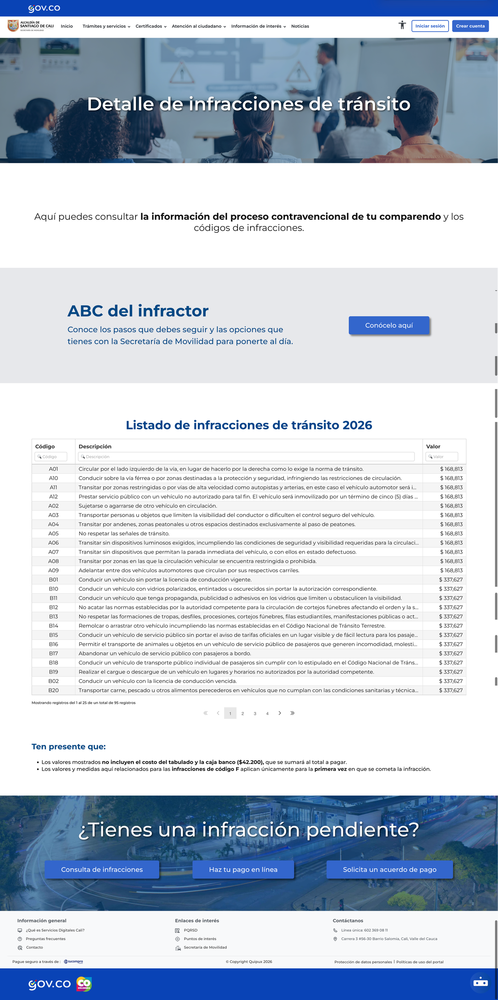
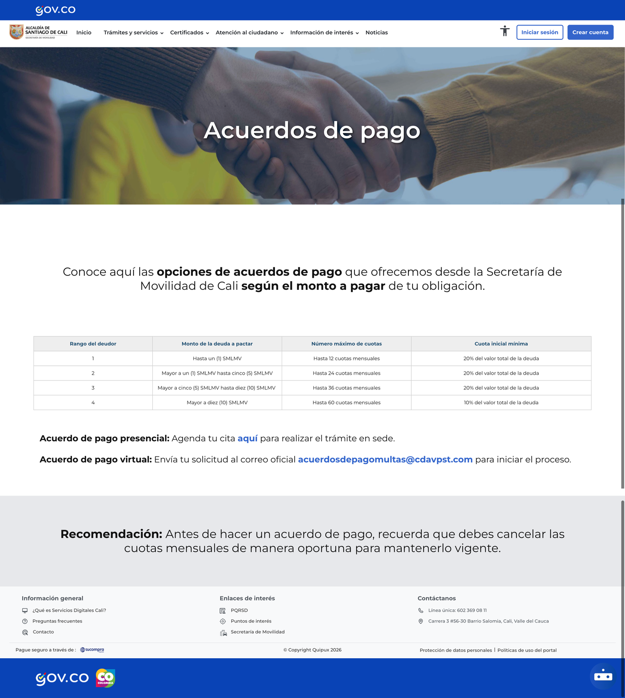
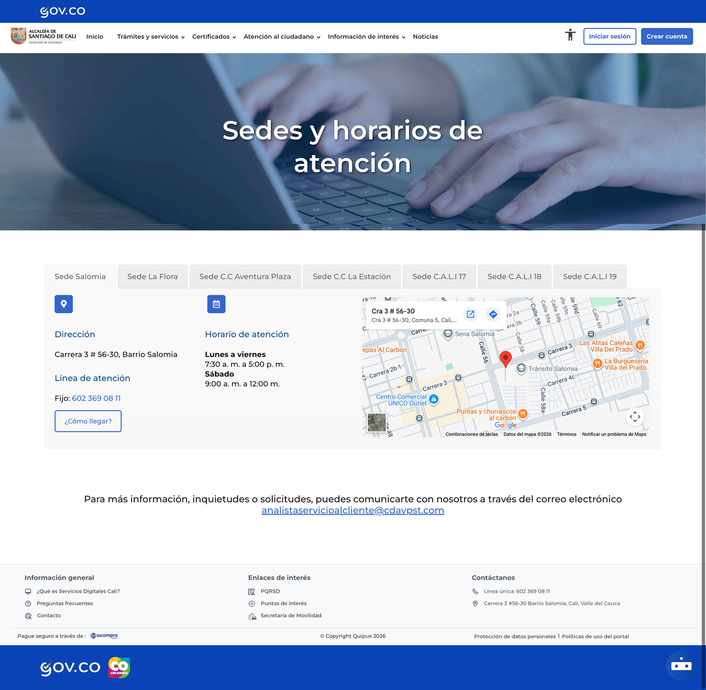
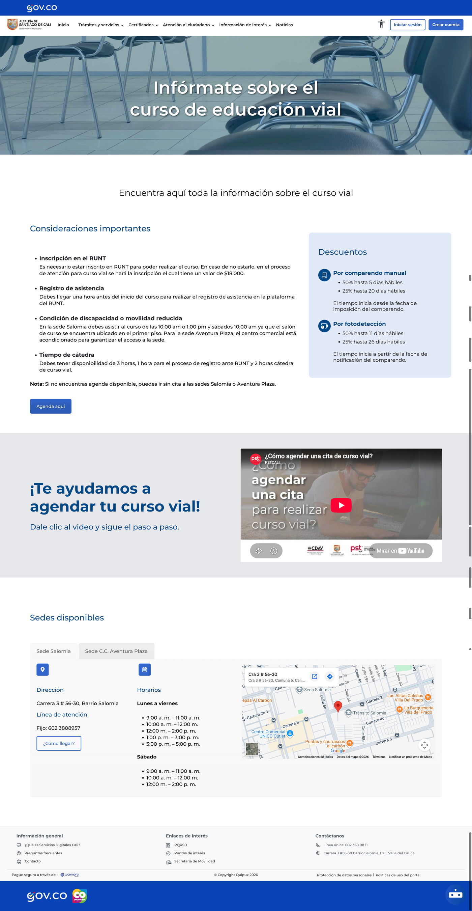
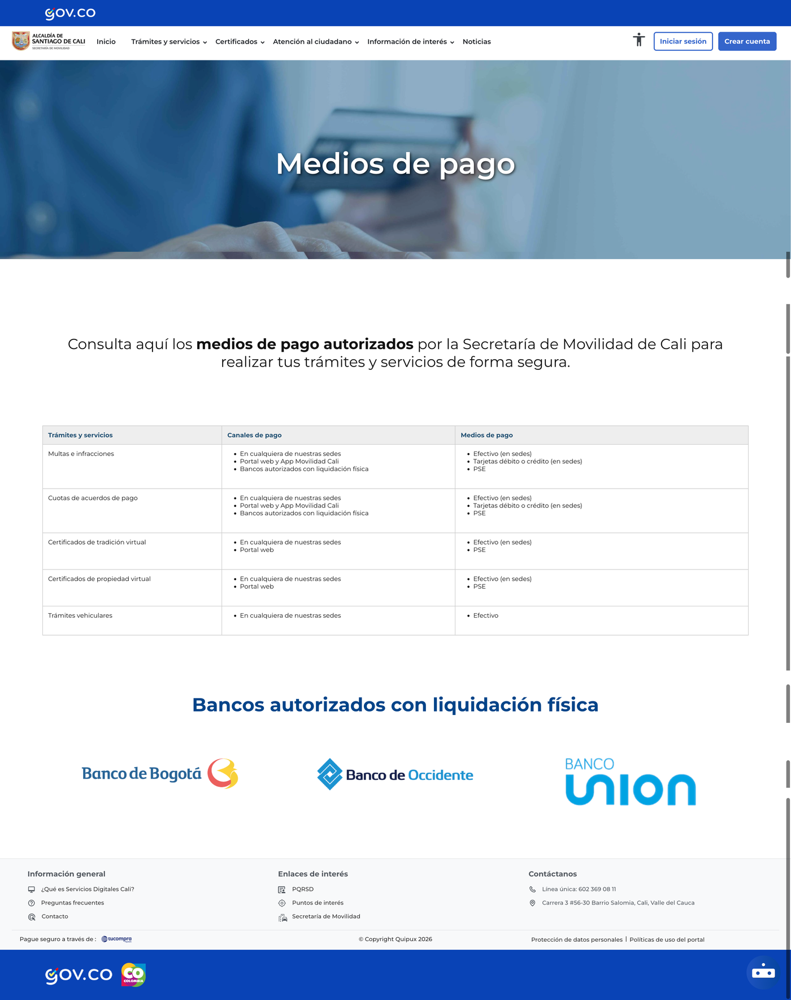
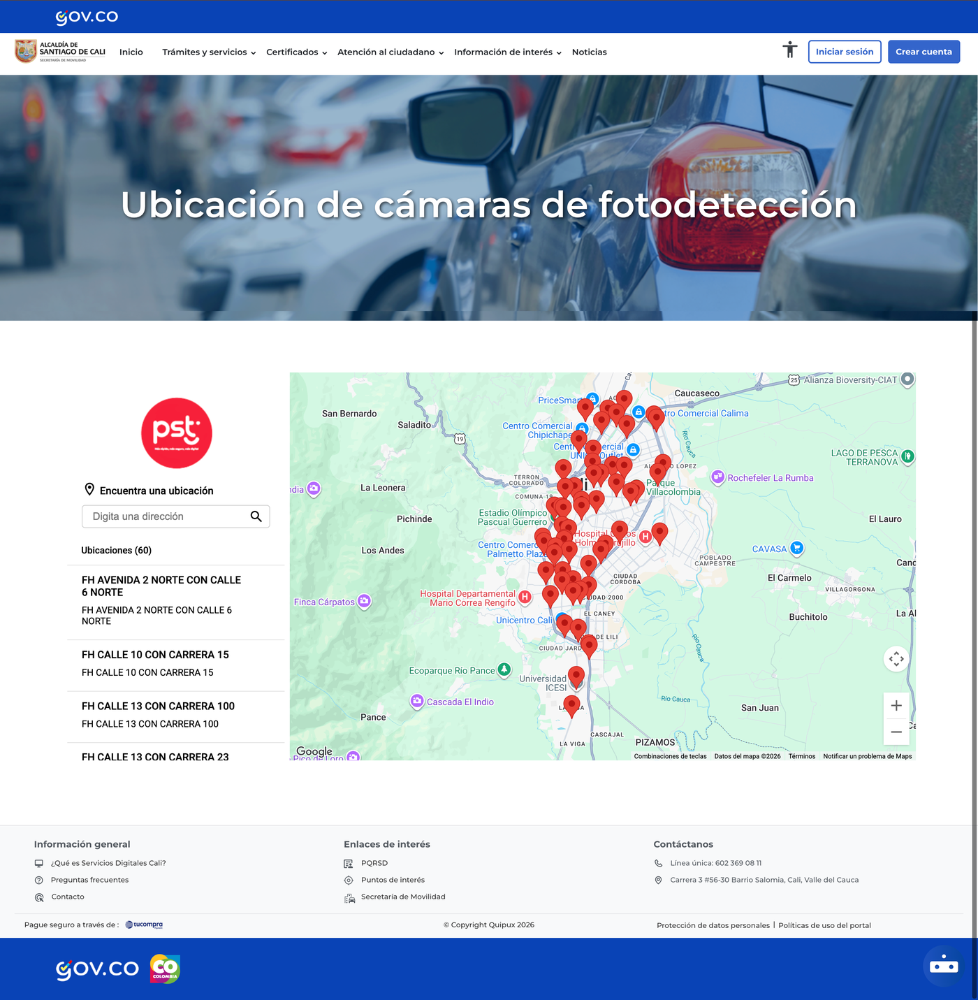

Secretaría de Movilidad de Cali
Mobility Content Platform
A reusable system of WordPress page templates and content blocks that lets the Secretaría de Movilidad de Cali publish clear, findable content for citizens — across trámites, courses, payment methods, camera locations and more — without designing a new layout every time.
My Role
Designing pages content teams could actually maintain.
I designed the page templates and content blocks used across the Secretaría de Movilidad de Cali's public content site, structuring how information is organized so non-technical content teams could publish and update pages on their own inside WordPress.
- Page Templates
- CMS Content Blocks
- Information Architecture
- Content Design
- Documentation
- Cross-functional Collaboration
Overview
The content existed. Finding it didn't work.
The Secretaría already had plenty to tell citizens — trámites, courses, payment options, camera locations, contact points — but each page risked being organized inconsistently and hard to scan if built one-off, so citizens could struggle to find what they needed even when the content was already there.
This project designed reusable WordPress page templates and content blocks so every page could publish in a clear, consistent structure, without designing a new layout every time.
Process & Design System
Three decisions made the templates scale.
The templates had to work for many Secretariats and many content editors, most of them without design or development support.
One template per content type
Trámites, news and campaigns each got their own fixed page template. Editors filled in a proven structure instead of improvising a new layout for every page.

Modular content blocks
Reusable blocks — a requirements accordion, a fee table, an FAQ, a document list — could be combined depending on what a specific page actually needed, without building a new component each time.

Editable without a designer
Templates and blocks were built inside the WordPress editor itself, so Secretariat staff could publish and update routine content on their own, without waiting on design or development for every change — like adding a new sede by reusing the same repeatable block instead of designing one.

A conclusion along the way
The content wasn't the problem. The structure holding it was.
Every Secretariat already had something to tell citizens. What was missing wasn't more content, it was a consistent place to put it — a structure clear enough that citizens could scan it, and simple enough that editors could maintain it without a designer in the room.
More Pages, Same System
One template system, many kinds of content.
A course sign-up page, a payment options table and an interactive map all run on the same underlying templates and blocks — proof the system flexes across very different content needs.



Before vs After
From every page different to one shared structure.
The shift was from each Secretariat publishing content however it could, to every Secretariat publishing from the same set of templates and blocks.
Outcome
In active use across multiple Secretariats.
The page templates and content blocks are in active use, with several mobility Secretariats already publishing trámites, campaigns and news through them in production.
Content teams update pages directly, without needing design or development support for routine changes — the structure does the consistency work that used to depend on each editor getting it right on their own.